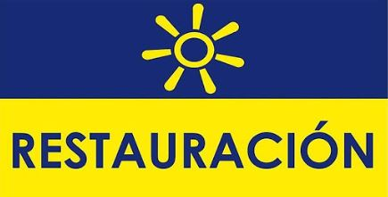
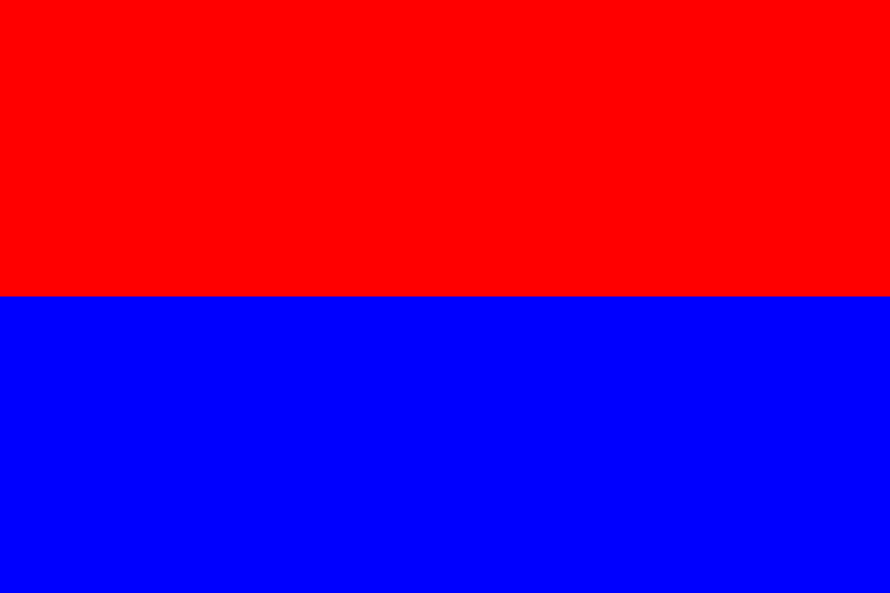

Elecciones presidenciales de Costa Rica de 2018
El objetivo principal de esta página es informar a los cuidadanos los diferentes candidatos presidenciales, partidos políticos y planes de gobierno.
Le motivamos a que tome una decisión informado en el momento de ejercer su voto.
Canditados a la presidencia
| PAC
| PRN
| PLN
| PUSC
|
 |
 |
 |
|
| Partido |
Candidato presidencial |
Encuesta #1 |
Encuesta #2 |
 |
Carlos Alvarado Quesada |
10,6% |
6% |
|  |
Fabricio Alvarado Muñoz |
16.9% |
17% |
 |
Antonio Álvarez Desanti |
12,4% |
9% |
|  |
Rodolfo Piza Rocafort |
8,2% |
11% |
Lugar de votación
Nacionales aquí por medio de:
Extranjeros aquí por medio de:
-